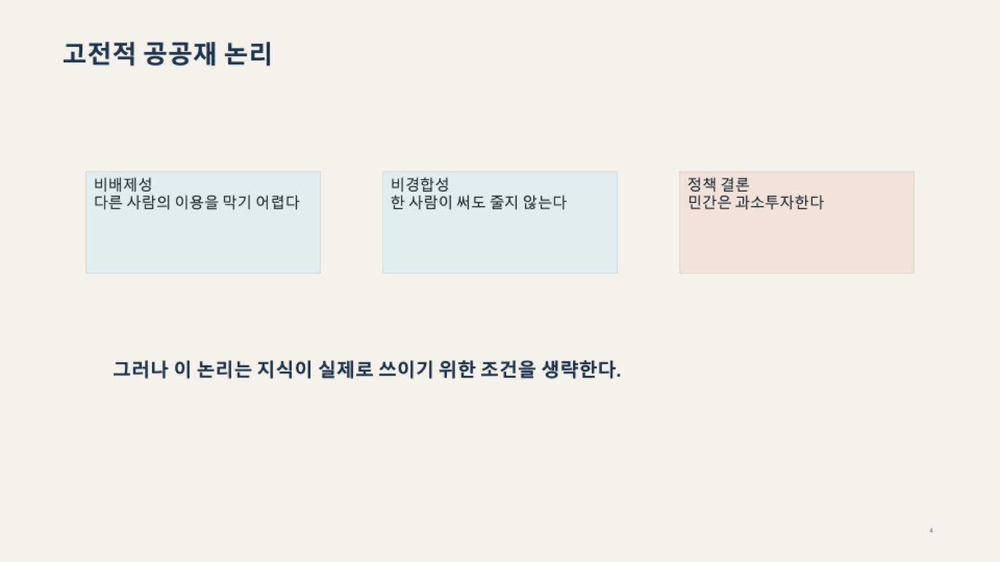
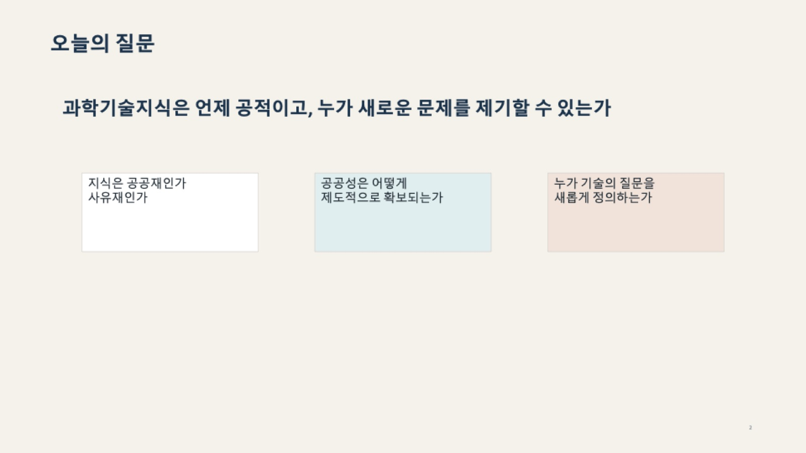
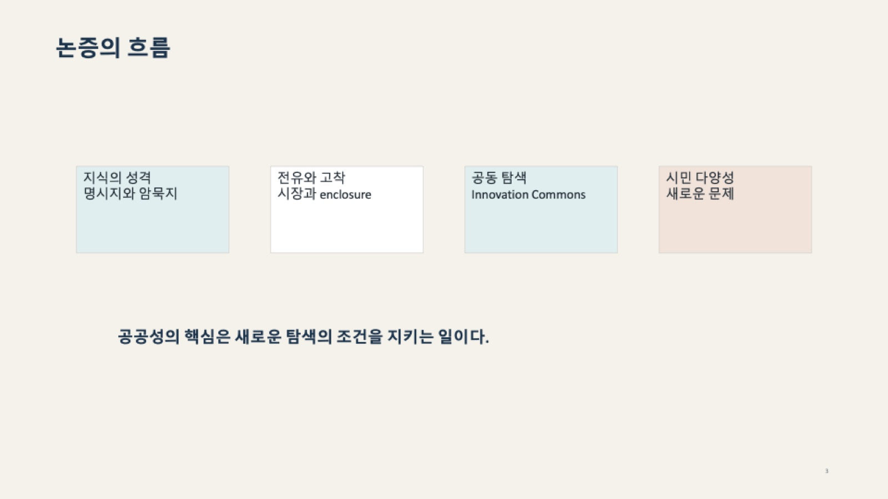
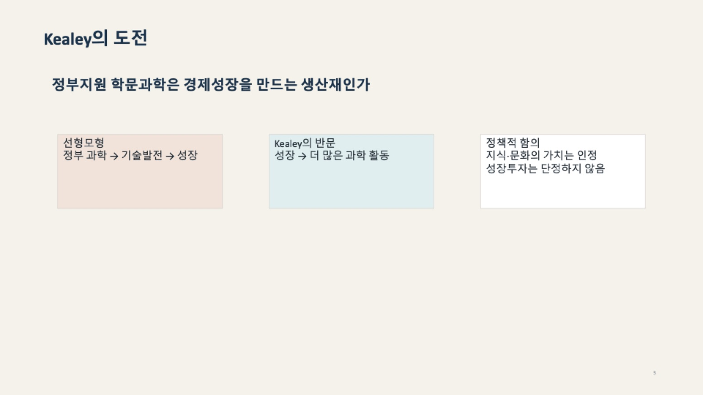

지식의 공공성 논쟁
🗣 교수 발언 📄 슬라이드 💡 보충(외부 지식)
고전적 공공재 논리와 그 한계
The Classical Public Good Argument and Its Limits
지식은 공공재인가 사유재인가 — 논쟁의 출발점
한 줄 정의
경제학은 지식을 공공재로 본다. 남이 쓰는 것을 막기 어렵고(비배제성), 남이 써도 내 몫이 줄지 않기(비경합성) 때문이다. 그래서 "민간은 지식에 과소투자하므로 정부가 대야 한다"는 결론이 나온다. 이 논리는 정부 R&D 예산의 근거이지만, 📄 "지식이 실제로 쓰이기 위한 조건을 생략"한다는 치명적 빈틈이 있다.
쉽게 말하면
동네 가로등을 생각해 보자. 내가 돈을 들여 세우면 지나가는 사람 모두가 공짜로 쓰고(비배제성), 남이 그 빛을 쬔다고 내 빛이 줄지 않는다(비경합성). 그러니 아무도 자기 돈으로 세우지 않는다. 그래서 구청이 세운다.
지식도 같다는 것이 고전 논리다. 논문을 쓰면 누구나 읽고, 읽는다고 내 지식이 줄지 않는다. 그러니 기업은 기초연구에 돈을 안 쓰고, 정부가 대야 한다.
그런데 빈틈은 여기다. 가로등은 세우면 바로 불이 켜진다. 그런데 논문은 공개해도 저절로 쓰이지 않는다. 그 논문을 읽고 재현할 사람, 장비, 표준이 있어야 한다. 이것이 Callon의 출발점이다(W02-2/03).
핵심 내용
📄 슬라이드 (W02-2 p5)

1) 공공재의 두 조건 ★
| 조건 | 📄 슬라이드 설명 | 💡 부연 |
|---|---|---|
| 비배제성 (non-excludability) | 다른 사람의 이용을 막기 어렵다 | 일단 공개된 지식은 울타리를 치기 어렵다 |
| 비경합성 (non-rivalry) | 한 사람이 써도 줄지 않는다 | 빵은 내가 먹으면 없어지지만, 공식은 내가 써도 남아 있다 |
2) 정책 결론
📄 민간은 과소투자한다 → 따라서 정부가 기초연구에 투자해야 한다.
💡 이 논증의 계보: Nelson(1959)과 Arrow(1962)가 정식화했다. Arrow는 여기에 정보의 역설을 덧붙였다 — 지식을 팔려면 그 내용을 보여 줘야 하는데, 보여 주는 순간 상대는 이미 그것을 갖게 되므로 살 이유가 없다. 그래서 지식은 시장에서 제대로 거래되지 않는다.
3) 📄 결정적 한 줄 — 이 슬라이드의 핵심
📄 "그러나 이 논리는 지식이 실제로 쓰이기 위한 조건을 생략한다."
- 고전 논리는 지식을 공개하면 끝나는 것으로 다룬다.
- 실제로는 공개 이후에 재현·활용의 문제가 남는다. → W02-2/03, W02-2/07.
- 💡 즉 이 슬라이드는 공공재 논리를 소개하면서 동시에 이번 강의 전체의 반론을 예고한다.
4) 논쟁의 세 질문 📄 (p3)

📄 이 자료 전체가 던지는 세 질문:
- 지식은 공공재인가 사유재인가
- 공공성은 어떻게 제도적으로 확보되는가
- 누가 기술의 질문을 새롭게 정의하는가
→ ①이 이 파일, ②가 W02-2/06–07, ③이 W02-2/08.
5) 논증의 흐름 📄 (p4)

📄 지식의 성격(명시지와 암묵지) → 전유와 고착(시장과 enclosure) → 공동 탐색(Innovation Commons) → 시민 다양성(새로운 문제)
📄 결론 미리보기: "공공성의 핵심은 새로운 탐색의 조건을 지키는 일이다."
수업에서 나온 논점
- W02 마무리 [2:40:44]: 🗣 오늘 못 다룬 리딩으로 Callon과 Kealey를 예고.
- 🗣 Callon: 과학 지식의 공공재적 성격 — 과연 그렇게 되겠냐는 질문.
- 🗣 Kealey: 과학 지식은 사유재다, 절대 공공재가 아니라고 매우 세게 주장. 돈 될 줄 알고 투자하는 것이지 남과 나눌 생각이 없다.
🗣 [2:40:44] "Callon 논문이 과학 지식의 공공재적 성격, 과연 그대로 되겠냐. Kealey 같은 사람은 과학 지식은 사유재다, 절대로 공공재가 아니다고 주장하는 사람. 되게 세게 주장하죠. 돈 될 거 알고 사람들이 투자한다, 남들하고 나눌 그런 생각 없다. … KLMS에 올린 게 있으니까 살짝 보는데, 그것만 가지고 알면 안 돼. 다음 시간에 내가 설명을 드릴게요."
★ 즉 이 파일의 내용은 9/19에 정식으로 강의될 예정이다. 퀴즈 1이 같은 날이므로, 퀴즈 범위에 포함될지는 강의 순서에 달렸다.
보충 사례
- Arrow (1962)의 세 가지 시장 실패 요인: 불가분성(연구는 조금씩 나눠 할 수 없다), 비전유성(성과를 독점하기 어렵다), 불확실성(될지 안 될지 모른다). 지금도 기초연구 예산의 표준 논거다.
- 왜 이 논리가 강력했나 💡: 2차 대전 후 미국의 Vannevar Bush 보고서 Science, the Endless Frontier(1945)가 "기초과학에 투자하면 응용과 산업이 따라온다"는 선형모형을 제도화했다. 공공재 논리는 그 경제학적 뒷받침이었다. → W02-2/02 Kealey가 정면으로 공격하는 대상이 바로 이것.
- 혁신정책 프레임과의 대응 💡: 이 논리가 Schot & Steinmueller(2018)의 Frame 1(R&D 정책)이고, W01/06의 시장 실패 처방이다. 세 실패 프레임의 첫 단계.
수업 프레임에서의 위치
- W02-2 전체의 출발점이자 공격 대상. 이후 모든 개념이 이 논리의 빈틈을 파고든다.
- W01/06 세 실패(시장 실패 → 시스템 실패 → 전환 실패)의 첫 단계에 정확히 대응한다.
- W02-1과의 관계: W02-1이 "지식은 어떻게 만들어지나(학습)"였다면, W02-2는 "만들어진 지식은 누구 것이고 어떻게 쓰이나"를 묻는다.
관련 개념 · 논문
- Callon (1994) "Is Science a Public Good?" — ★Core Reading. 🗣 다음 시간 설명 예고.
- Arrow (1962), Nelson (1959) — 💡 공공재 논리의 원전.
- 연결: W02-2/02 Kealey의 도전 · W02-2/03 Callon의 전환 · W01/06 세 가지 실패
예상 퀴즈 포인트
- ★ 지식을 공공재로 보는 논리(비배제성·비경합성)와 그 정책 결론을 설명하라.
- ★ 이 논리가 생략한 것은 무엇인가? ("지식이 실제로 쓰이기 위한 조건")
- 비교형: 공공재 논리와 W01/06의 시장 실패 프레임의 관계를 설명하라.
Kealey의 도전 — 선형모형 뒤집기
Kealey's Challenge to the Linear Model
정부지원 학문과학은 경제성장을 만드는 생산재인가
한 줄 정의
"정부가 과학에 투자하면 기술이 발전하고 경제가 성장한다"는 선형모형에 대한 정면 반박이다. Kealey는 인과가 반대라고 본다. 성장했기 때문에 과학 활동이 늘어난 것이지, 과학에 투자해서 성장한 것이 아니라는 것이다. 더 나아가 🗣 과학 지식은 사유재이며, 사람들은 돈이 될 줄 알고 투자하는 것이지 남과 나눌 생각이 없다고 주장한다.
쉽게 말하면
"헬스장이 많은 동네 사람들이 건강하다"는 관찰이 있다고 하자.
- 선형모형식 해석: 헬스장을 지으면 사람들이 건강해진다. → 정부가 헬스장을 짓자.
- Kealey식 반문: 아니다. 잘사는 동네라서 헬스장이 많고 사람들도 건강한 것이다. 헬스장은 결과지 원인이 아니다.
Kealey가 과학과 성장에 대해 던진 질문이 정확히 이것이다.
핵심 내용
📄 슬라이드 (W02-2 p6)

1) 두 인과의 대립 ★
| 선형모형 (통설) | Kealey의 반문 | |
|---|---|---|
| 인과 방향 | 정부 과학 → 기술발전 → 성장 | 성장 → 더 많은 과학 활동 |
| 함의 | 정부가 기초과학에 투자해야 한다 | 투자해도 성장으로 이어진다고 단정할 수 없다 |
2) 📄 정책적 함의 — 온건한 결론
📄 지식·문화의 가치는 인정. 성장투자는 단정하지 않음.
💡 이 구분이 중요하다. Kealey는 "과학이 쓸모없다"고 말하지 않는다. 과학의 문화적·지적 가치는 인정하되, "성장을 위한 투자"라는 정당화는 근거가 약하다고 본다. 퀴즈에서 Kealey를 "반과학주의자"로 쓰면 틀린다.
3) 🗣 교수의 소개 — 사유재 주장
🗣 [2:40:44] "Kealey 같은 사람은 과학 지식은 사유재다, 절대로 공공재가 아니다고 주장하는 사람. 되게 세게 주장하죠. 돈 될 거 알고 사람들이 투자한다, 남들하고 나눌 그런 생각 없다."
- 즉 Kealey의 공격은 두 갈래다.
- 인과 반박: 과학이 성장을 만드는 게 아니다 (📄 슬라이드).
- 성격 반박: 지식은 애초에 공공재가 아니라 사유재다 (🗣).
- ②는 W02-2/04(지식의 사유화 경로)로 이어진다. 💡 실제로 기업은 spillover가 있어도 연구를 계속하는데, 그 이유가 암묵지·보완자산·데이터 같은 전유 수단이 있기 때문이다.
4) 논쟁 구도 안에서의 위치 💡
세 입장을 한 줄로 배열하면 이해가 쉽다.
| 입장 | 지식은? | 정부는? |
|---|---|---|
| 고전 공공재론 (Arrow, Nelson) | 공공재 | 투자해야 한다 (시장 실패 보정) |
| Kealey | 사유재 | 투자 근거가 약하다 |
| Callon | 둘 다 아님 — 조건에 달림 | 투자 여부보다 재현·활용·탐색의 조건을 봐야 한다 |
→ 이 자료의 결론은 세 번째다. Kealey는 고전 논리를 흔드는 지렛대로 배치되어 있다.
수업에서 나온 논점
- 🗣 "KLMS에 올린 게 있으니까 살짝 보는데, 그것만 가지고 알면 안 돼. 다음 시간에 내가 설명을 드릴게요." → 9/19 강의 후 보강 필요.
보충 사례
- Terence Kealey: 영국의 생화학자 출신으로 버킹엄대(영국의 대표적 사립대) 총장을 지냈다. The Economic Laws of Scientific Research(1996)에서 산업혁명기 영국이 정부 과학 지원 없이 기술 진보를 이뤘다는 점, 정부 R&D가 민간 R&D를 밀어내는(crowding out) 효과가 있다는 점을 들었다.
- 💡 반론도 알아 둘 것: 인터넷·GPS·mRNA 백신처럼 초기 불확실성이 너무 커서 민간이 못 하는 영역이 실제로 존재한다(Mazzucato의 반론, W01/01 보충 사례). Kealey의 주장은 "정부 지원이 늘 무용하다"가 아니라 "성장 효과가 자동은 아니다"로 읽는 것이 공정하다.
- 💡 Mokyr와의 미묘한 관계: Mokyr(W02-1/05)도 산업혁명에서 과학자 집단의 코드화를 중시했지, 정부 지원을 중시하지는 않았다. 두 사람 모두 "산업이 먼저 있었다"는 점에서는 겹친다. 🗣 W02 §4-1의 "산업이 있고 거기에 과학을 끌어다 쓴 것"이 그 지점.
수업 프레임에서의 위치
- W02-2/01(공공재 논리)에 대한 첫 번째 타격. 다만 Kealey의 답(사유재)이 이 자료의 결론은 아니다.
- Callon(W02-2/03)이 등장하기 위한 발판: 공공재냐 사유재냐라는 이분법 자체가 잘못된 질문임을 보이려면, 먼저 양극단이 제시되어야 한다.
- W02-1/06의 "산업이 과학을 끌고 가야 한다"는 🗣 주장과 방향이 같다. 둘 다 technology push에 대한 회의.
관련 개념 · 논문
- Kealey (1996) The Economic Laws of Scientific Research — 💡 (원문 미확인).
- 연결: W02-2/01 공공재 논리 · W02-2/03 Callon의 전환 · W02-2/04 지식의 사유화 · W02-1/06
예상 퀴즈 포인트
- ★ 선형모형과 Kealey의 반문을 대비해 설명하라. 인과의 방향이 어떻게 뒤집히는가?
- Kealey의 정책적 함의가 "과학은 쓸모없다"가 아닌 이유를 설명하라.
- 비교형: 공공재론·Kealey·Callon의 세 입장을 "지식의 성격"과 "정부의 역할"로 비교하라.